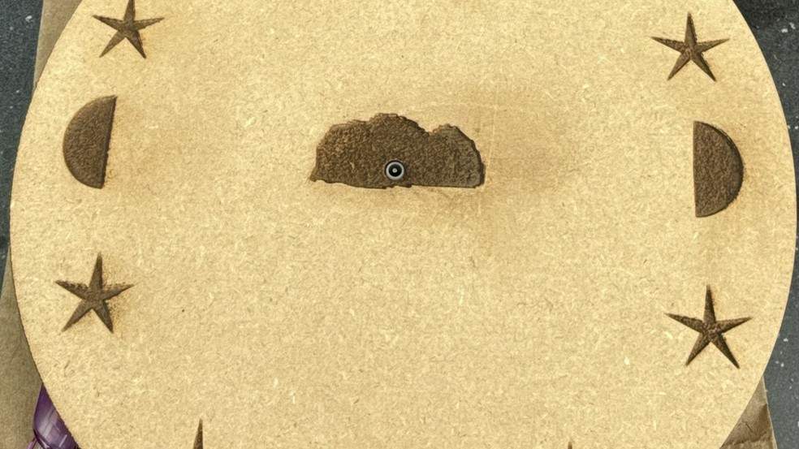

Prototyping
My Work with Prototyping
A collection of projects exploring interaction, usability, and iterative design through Figma and hands-on prototyping.
Portfolio
I’m Julia Koutsoukos, an Information Science student focused on human-centered design. I create thoughtful digital experiences rooted in usability, research, and visual clarity.
About
I’m an Information Science student at Michigan State University with a focus on human-centered design. My work explores how technology, wellness, and daily routines intersect.
I’m especially interested in creating experiences that feel intuitive, useful, and visually considered — whether that’s through prototyping, research, or front-end development.
Currently Studying Information Science at Michigan State
Focus UX, research, prototyping, and web design
Interest Designing for clarity, wellness, and usability
Selected Work

Prototyping
A collection of projects exploring interaction, usability, and iterative design through Figma and hands-on prototyping.

Web Design & Development
Websites that balance visual design, usability, and clean front-end execution across screen sizes.

User Research
Research work focused on uncovering user needs and translating insights into stronger design decisions.